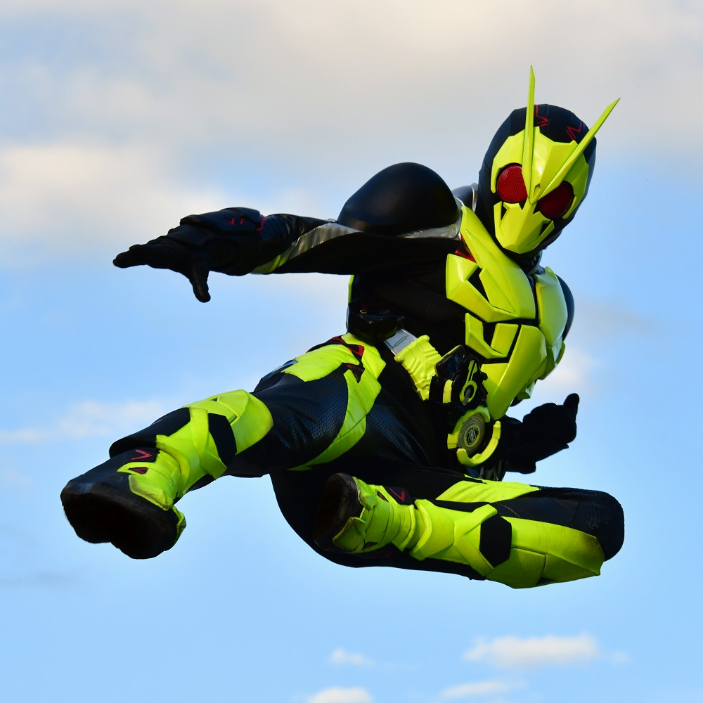
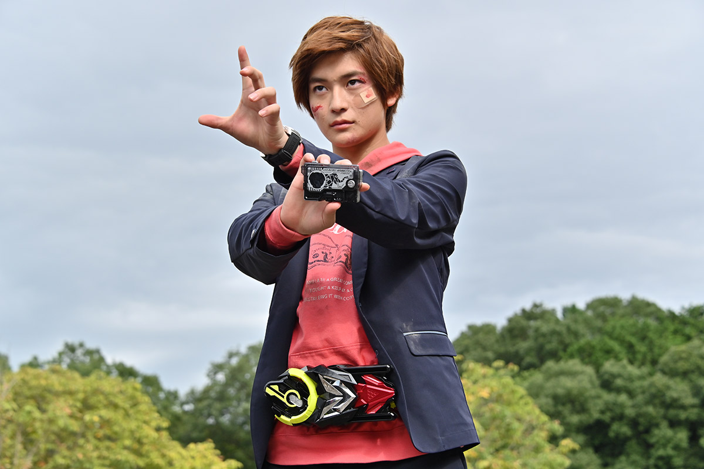
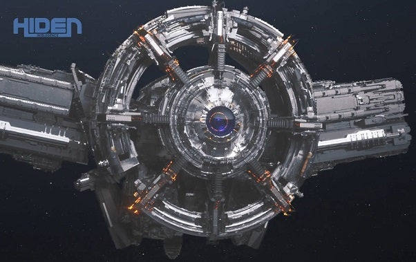
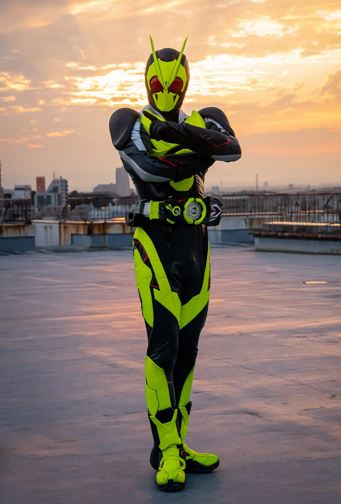
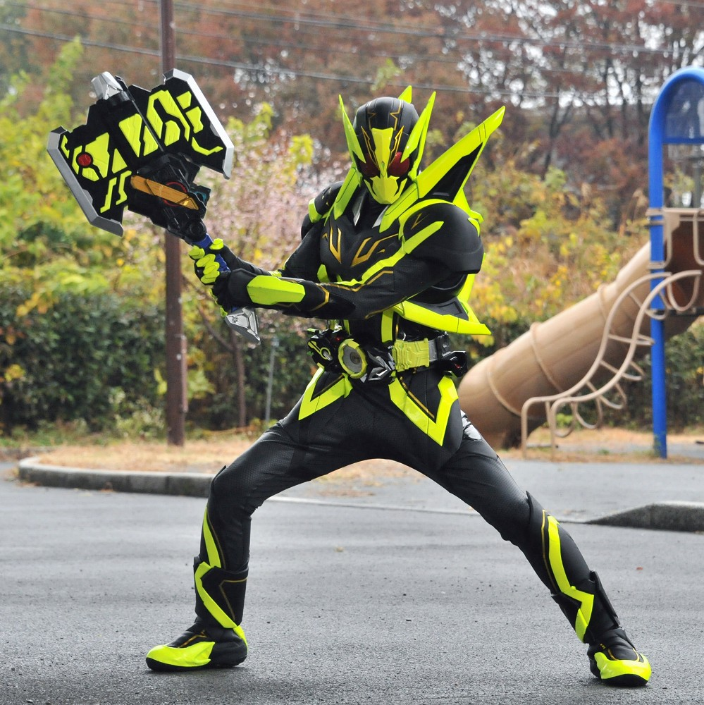
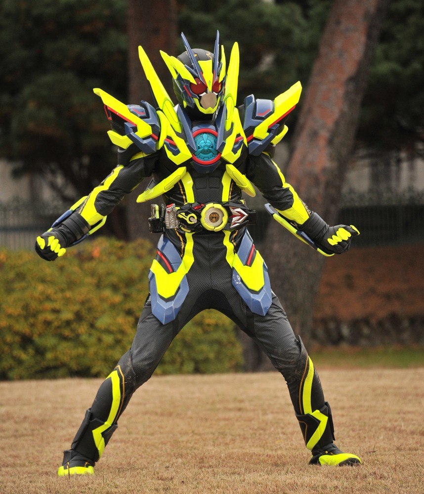
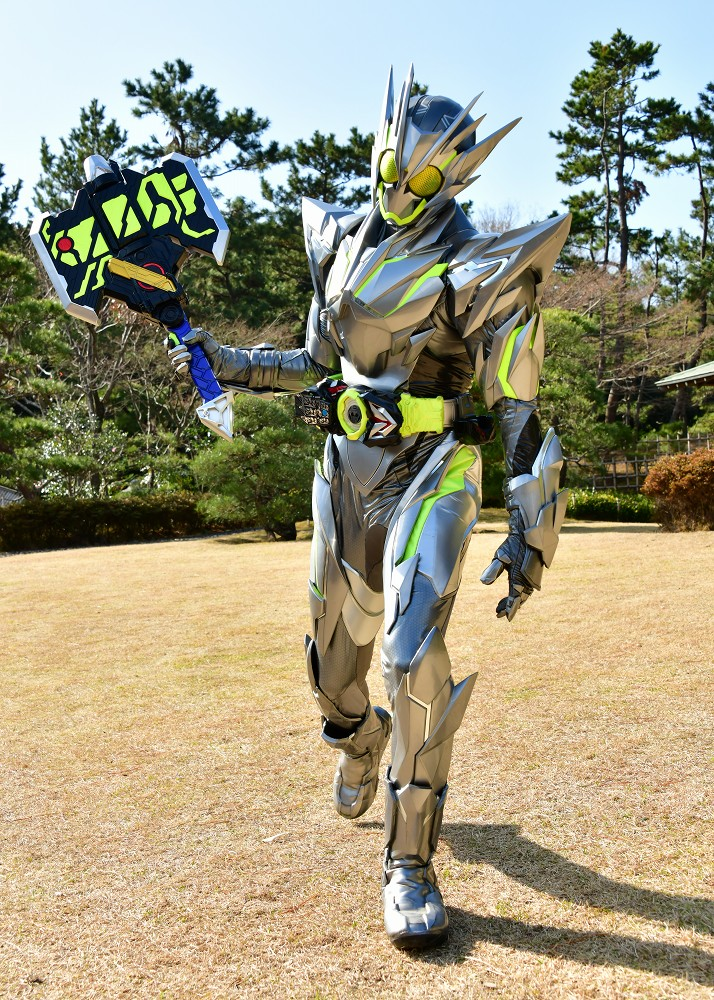
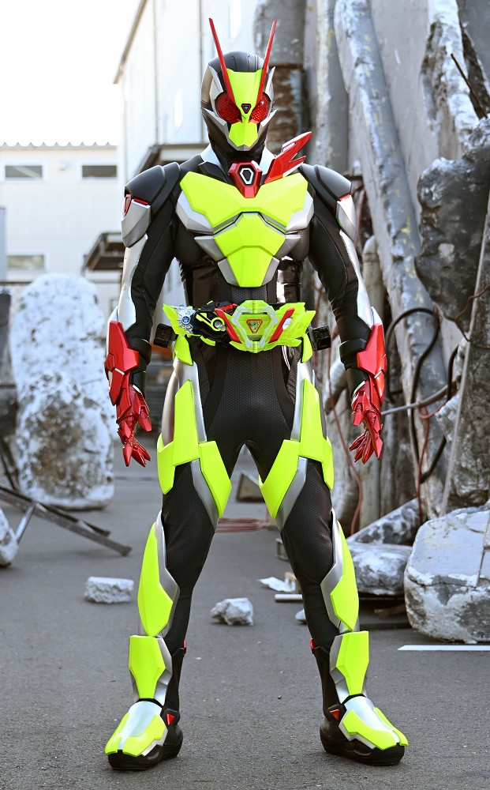

2019年から放送された「仮面ライダーゼロワン」に登場する仮面ライダー
変身者は飛電或人。生物のデータが内蔵されているプログライズキーと飛電ゼロワンドライバーを使い、変身する。
基本形態はライジングホッパー。令和1号である。
身長：196.5cm 体重：87kg パンチ力：8.4t キック力:49t ジャンプ力：ひと跳び60.1m 走力：100mを4.1秒程度

飛電ゼロワンドライバーにプログライズキーをタッチし、キーのロックを解除する。
その後、プログライズキーが展開され、ドライバーに差し込む事で変身が実行される。
変身には社長である必要がある。
危険なプログライズキーもロックを解除するため、セキュリティがないようなもの。

「ゼロワン」にはゼアとアークの２つのAIが登場する。
どちらも超高性能のAIであり、
ゼアはゼロワンの戦闘のサポートを行う。
アークは人類の殲滅を企んでいる。
ゼアは衛星に組み込まれており、衛星からゼロワン用のバイクなどを射出する。

ライジングホッパー
「ライジングホッパー」プログライズキーで変身
バッタの機能を拡張、再現する強化装置を組み込んでおり、
２０階建てのビルを飛び越えるほどのジャンプ力を発揮する。
かっこいい。

シャイニングホッパー
「シャイニングホッパー」プログライズキーで変身
ライジングホッパーの進化系。
あらゆる状況を予測し、最適な攻撃パターンを瞬時に判断可能。
使用後、筋肉痛になるのが玉に傷。

シャイニングアサルトホッパー
「シャイニングホッパー」プログライズキーに「アサルトグリップ」を装着し、変身
シャイニングホッパーの負荷を軽減することに成功している。
思考反応波動ユニットを搭載しており、周囲に波動弾を展開することが可能。
シャイニングホッパーの完成形。

メタルクラスターホッパー
「メタルクラスター」プログライズキーで変身
クラスターセルという装甲を小型のバッタに変形させ相手を攻撃する。
変身と同時にアークとつながってしまうため、暴走のリスクがある。
だが、ゼアが作成した「プログライズホッパーブレード」により暴走を克服した。
映画では黒幕相手に相性勝ちした。

仮面ライダーゼロツー
「ゼロツー」プログライズキーと「飛電ゼロツードライバー」を使い変身
ゼロワンとしての進化はメタルクラスターホッパーで止まっており、
それ以上の進化はできないと予測されていた。
そのため、ゼロワンを超える新しいライダーとして作られた。
ゼロワン以上の戦闘能力、最高の予測能力を持っている。
最強フォームでライダー自体が変わるのはゼロツーが初である。
仮面ライダー一覧